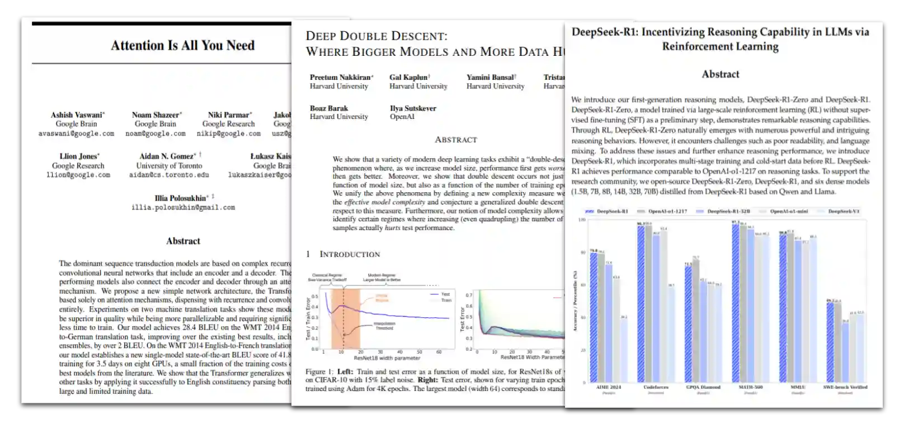

Projects
Writing, competitions, and reading lists.
2025
Some resouces for getting started with LLMs.

2024
Recap of the 2024 IMC Prosperity Global Trading Competition, the "world's most elaborate trading challenge."
2024
Some resouces for getting started with quant.
2022
Recap of the 2022 Citadel Data Open Championship, the "largest and most prestigious university-level data science competition in the world."